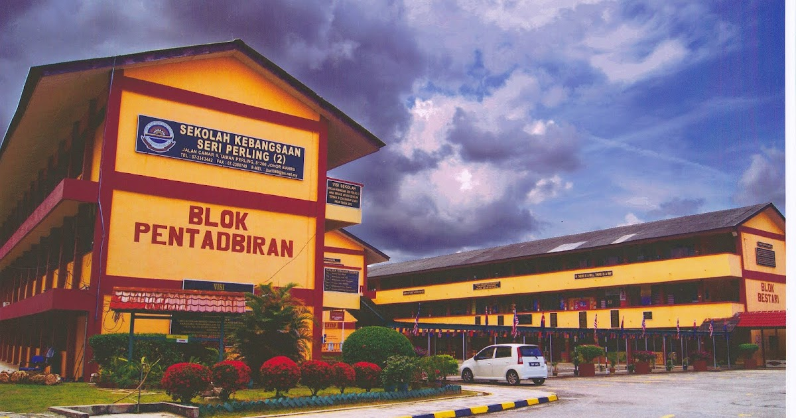

Education
Ujian Penilaian Sekolah Rendah (UPSR)
Sekolah Kebangsaan Seri Perling 2
Gained 3A's
2013 – 2018
Ujian Penilaian Kelas Kafa (UPKK)
Sekolah Agama Taman Perling 2
Gained 8A's
2013 – 2018
Sijil Darjah Khas Agama (SDKA)
Sekolah Agama Taman Perling 2
Gained Pangkat 1
2019
Sijil Pelajaran Malaysia (SPM)
Sekolah Menengah Kebangsaan Medini
Gained 5A's
2019 – 2023Diploma in Information Management
Universiti Teknologi MARA (UiTM)
CGPA: Unknown
2024 – 2026